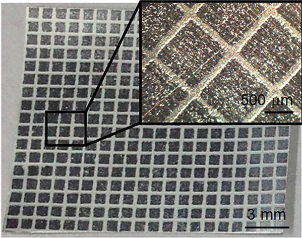

s
The Three Components
We chose the trilayer, the current collector, and the stacking method as our main areas improvement because those three have the largest impact on the overall capacitance, thermal properties, and ionic conductivity of the cell.
The Trilayer
The most significant component of the newly proposed supercapacitor is the trilayer, and it consists of: graphene, silicene, germanene.
Those three single atom thick allotropes of the elements carbon, silicon, and germanium, respectively, are very similar in chemical composition and other properties.
Graphene, although a great electrical and thermal conductor and very pliable, doesn't have the properties of a semiconductor.
It is classified as a zero-gap semiconductor because its conduction and valence bands meet at the Dirac point.
The advantage of the semiconductor is the ability to regulate the flow of electrons.
The Current Collector

When designing a supercapacitor cell it's important to have an efficient current collector,
because its function is to collect generated electricity and disperse it to other parts of the system.
Current designs are not bad, but decreasing thermal-runaway will keep the overall temperature of the cell within the operating range of the supercapacitor, -40°C to 85°C.
The solution was to use heterogeneous current collectors, which are designed for heat dissipation and to not overheat due to mechanical stress.
The Stacking Method
As the name implies, the stacking method is the order in which the single layer allotropes are stacked on top of each other.
We considered two common solutions: ABA, or Bernal, stacking and ABC, or rhombohedral, stacking.
One study demonstrated that the ABA method acted like a conductor, whereas the ABC method acted like an insulator.
We went with ABA stacking because two of the three single layer allotropes we propose have semiconductor properties,
and are capable of regulating current flow on their own, therefore negating the high resistance in the electrodes.